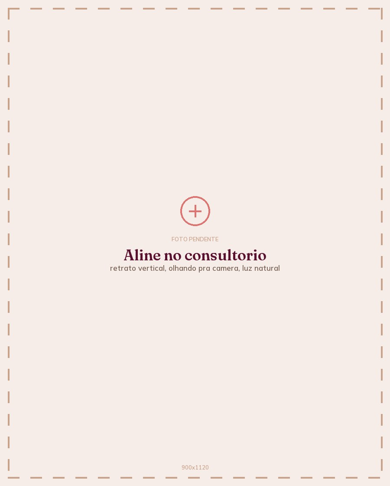
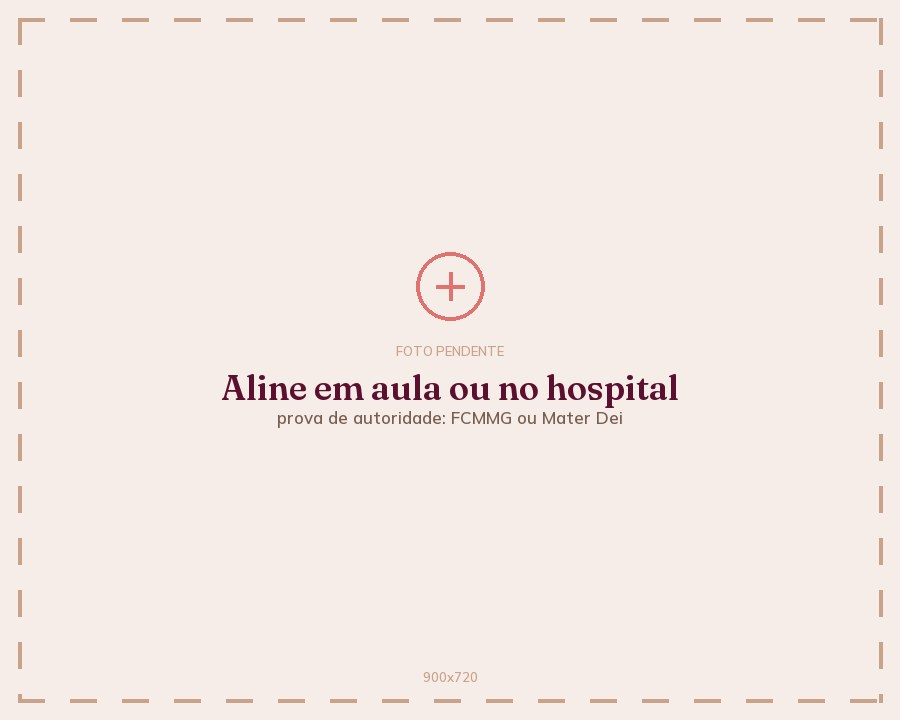
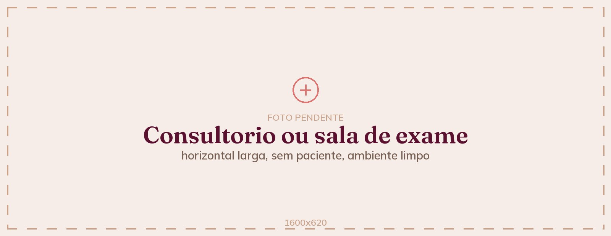

CRM-MG 75153 · RQE 50466
Professora de ginecologia na Faculdade de Ciências Médicas e médica do corpo clínico do Mater Dei.

Dra. Aline BonanatoCRM-MG 75153 · RQE 50466 5,0Doctoralia · 12 opiniõesPLACEHOLDER: nota do Doctoraliaa confirmar
Pré-natal e parto com a mesma médica, do começo ao fim. Partos no Hospital Mater Dei.
Ver como funcionaRessecamento, dor na relação, perda de urina ao tossir ou correr, incômodo que sobrou do parto. Tem nome, tem causa e tem o que fazer. O laser é uma das opções, e não serve pra toda queixa.
Ver o que o laser trataVolume, flacidez, assimetria, marca de cicatriz. Se te incomoda, já é motivo suficiente pra perguntar. A conversa começa pelo que dá pra fazer, pelo que não dá, e pelo que não precisa ser feito.
Ver o que é possívelDIU hormonal, DIU de cobre, implante, e as dúvidas honestas sobre cada um deles. Colocação no consultório.
Ver as opções
Dá aula de ginecologia pra quem ainda vai ser médico, e atende no consultório na mesma semana. O que ela ensina na faculdade é o que ela usa na consulta: o que é, o que não é, e o que vale a pena fazer.
Acompanha os partos das próprias pacientes no Mater Dei. Atende na Clínica Vitti, em Belo Horizonte, na agenda dela. Quem marca com a Aline é atendida pela Aline.
Ginecologia e Obstetrícia · CRM-MG 75153 · RQE 50466
Você conta o que está sentindo com as palavras que quiser. Aqui se diz vulva, sexo e dor na relação sem rodeio, e não existe assunto que deixe alguém sem graça.
Depois vem o exame e a explicação: o que é, o que não é, e o que vale a pena fazer. Se não for caso de tratamento nenhum, você sai sabendo disso também. Vale igual pra queixa de saúde e pra queixa de estética.
Quando existe indicação de procedimento, ele vem com o que trata, o que não trata e o que a literatura mostra até hoje. E é decidido depois, com calma, nunca no mesmo minuto em que foi apresentado.
Você não fica no vácuo entre uma consulta e outra.
PLACEHOLDER: 3 relatos a coletar com a Aline, um deles de paciente que veio por estética
Cada relato é publicado com autorização por escrito da paciente.

Clínica Vitti
PLACEHOLDER: endereço completo a confirmar
Belo Horizonte, MG
Consultas às segundas-feiras, com hora marcada.
Hospital Mater Dei
Belo Horizonte, MG
Para as pacientes que fazem o pré-natal comigo.
A resposta vem da própria clínica, com horário e valor da consulta.